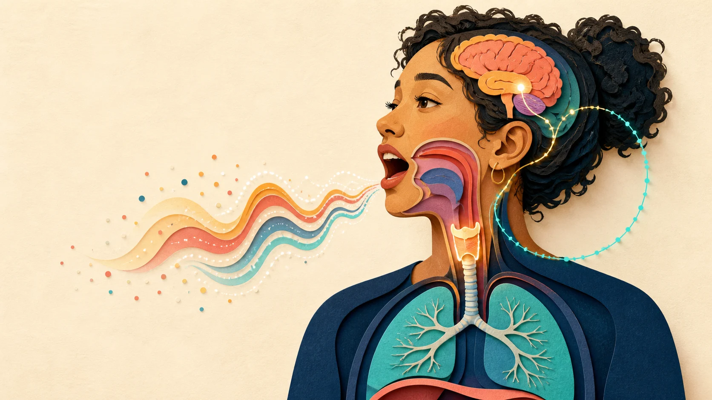
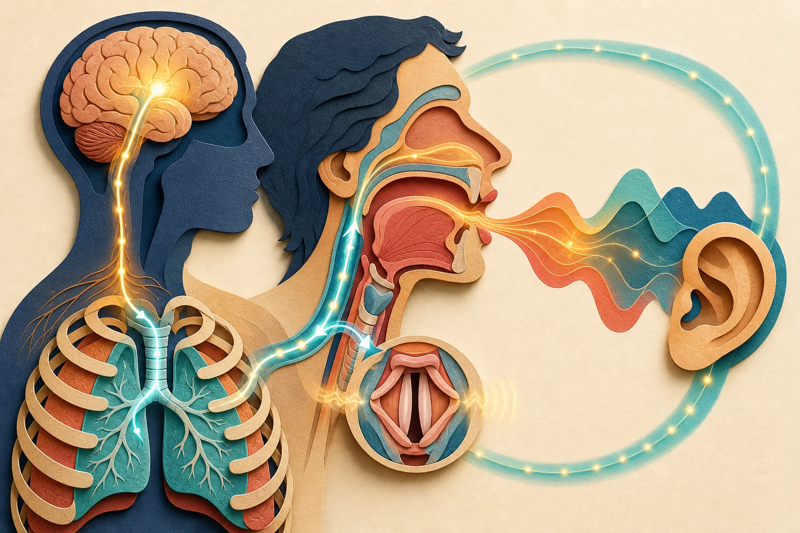
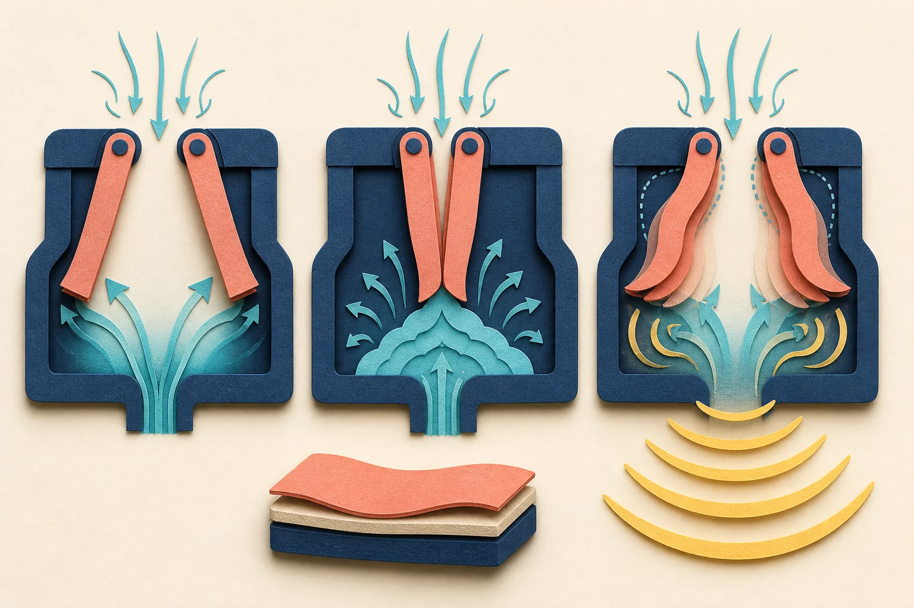
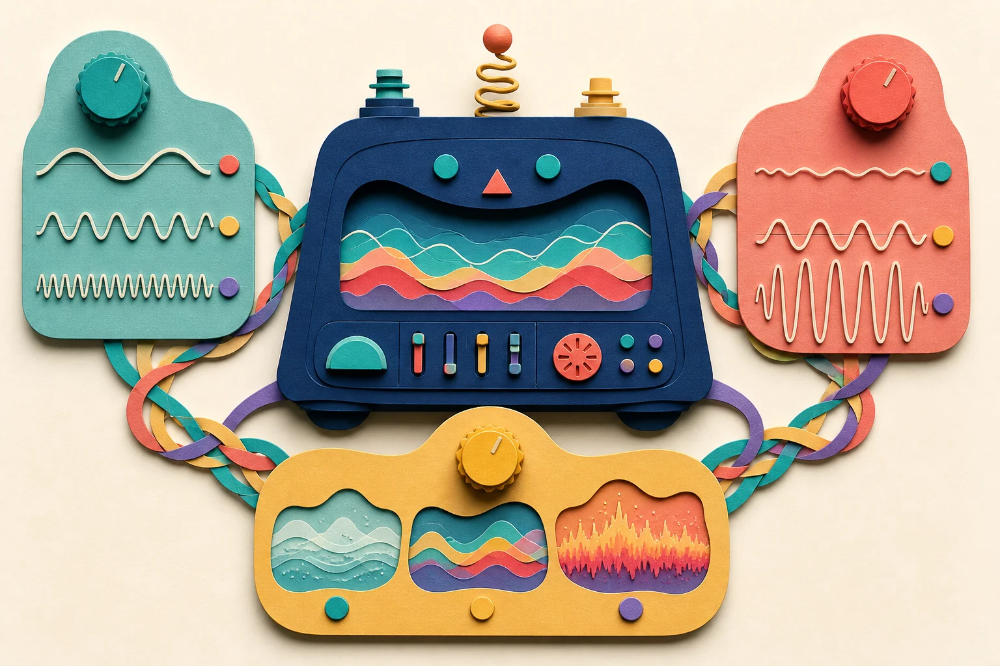
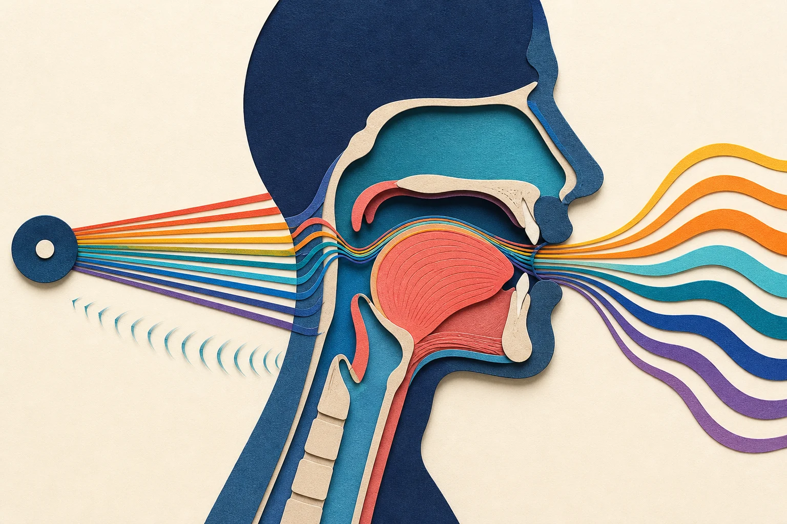
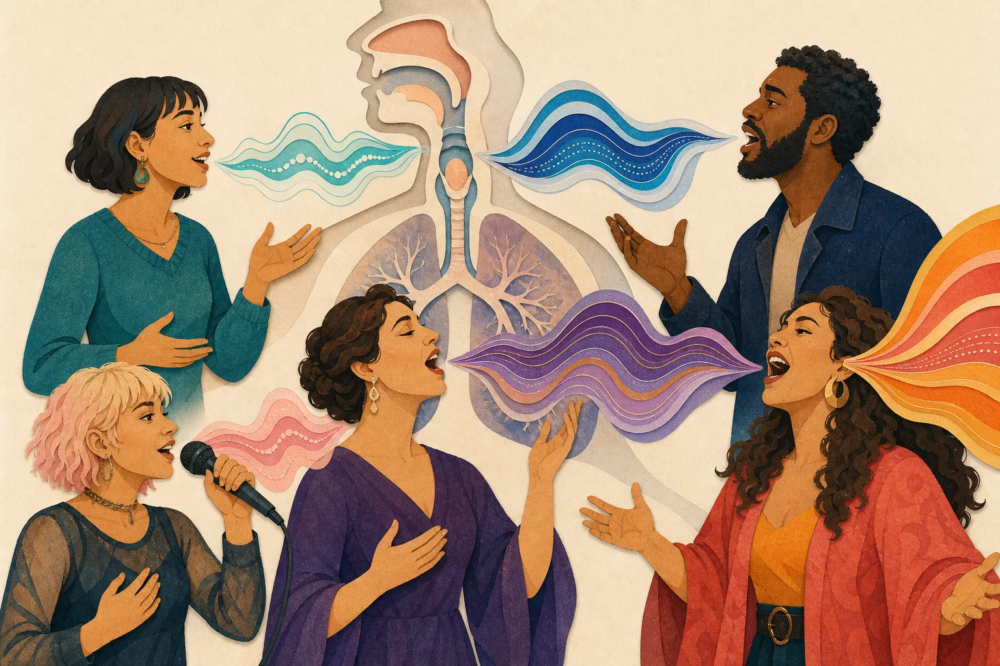
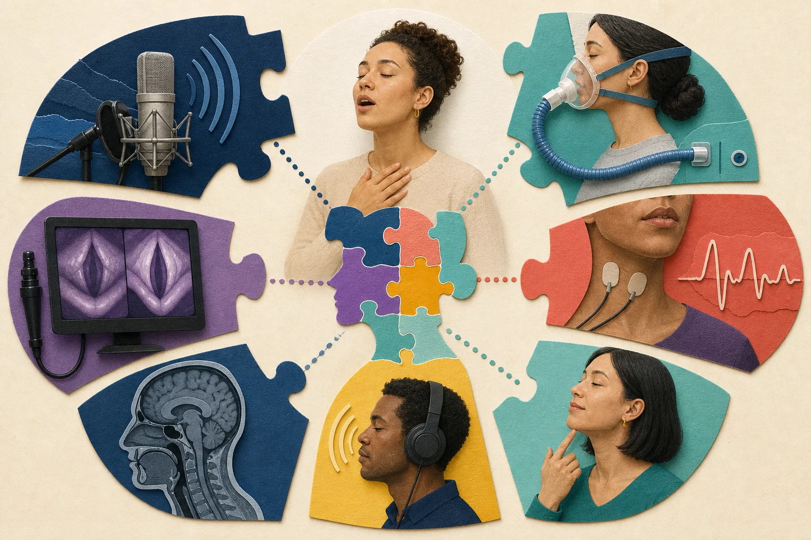
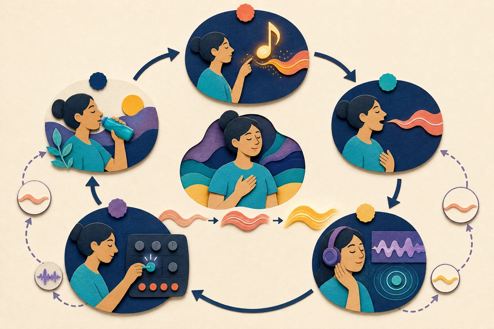
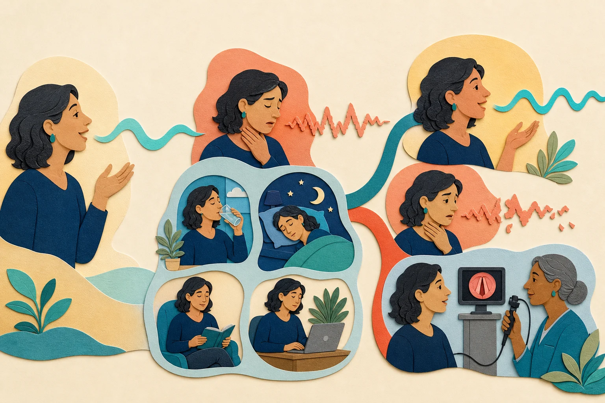

호흡이 전원
폐가 압력과 흐름을 제공하지만 음정 버튼은 아닙니다.

AI 생성 설명 이미지 · 실제 의료 영상 아님발성은 “목에서 소리 내기”가 아니라
몸 전체가 목표 소리를 계속 예측하고 고치는 과정이에요.
폐가 압력과 흐름을 제공하지만 음정 버튼은 아닙니다.
공기와 탄성 조직이 만나 스스로 반복 진동합니다.
혀·턱·입술·인두가 배음을 골라 말과 음색을 만듭니다.
예측, 청각과 몸의 감각으로 다음 시도를 수정합니다.
01 · 같은 말 속 다른 질문
무엇이 달라졌는지 말하려면 먼저 생성, 여과, 말 만들기, 훈련을 구분해야 합니다.
| 용어 | 쉬운 뜻 | 예시 |
|---|---|---|
| 발성 전체 | 호흡–후두–성도–뇌를 합친 목소리 생산 | 말하기, 노래하기, 웃기 |
| 성대발성 | 성대 진동으로 유성 음원을 만드는 부분 | /아/의 윙윙거리는 재료 |
| 공명·조음 | 성도 모양으로 음색과 모음·자음을 만드는 부분 | 같은 음정의 /아/와 /이/ |
| 발성 테크닉 | 특정 목표를 반복 가능하게 만드는 학습 전략 | 강연 투사, 벨트, 레가토 |
02 · 전체 지도를 먼저
소리가 밖으로 나간 뒤 귀와 몸의 감각을 통해 다시 뇌로 돌아옵니다.

03 · 호흡과 서포트
압력, 흐름, 성문의 저항을 따로 보면 “숨을 많이”와 “잘 지지한다”의 차이가 보입니다.
성대 아래에서 미는 압력. 진동 시작과 음량 조건에 관여합니다.
성문을 통과하는 공기. 많이 흐른다고 압력이 자동으로 큰 것은 아닙니다.
성대가 얼마나 벌어지고 접촉하는지가 압력–흐름 관계를 바꿉니다.
“횡격막을 내려서 음을 받쳐라”
→ 몸통 전체의 압력·흐름·시간 협응으로 번역하세요.
고전 가수 7명과 비훈련자 4명의 연구에서는 흉곽과 복부의 협응 차이와 큰 개인차가 함께 보였습니다. 이는 복부 기여가 무의미하다는 뜻도, 하나의 복식호흡이 보편 정답이라는 뜻도 아닙니다.
Salomoni et al., 2016 · 작은 표본의 고전 과제
04 · 성대의 자기진동
가까워진 탄성 조직과 공기 흐름이 만나면, 에너지가 매 주기 조직으로 전달되어 진동이 유지됩니다.

후두근이 성대를 발성 가능한 위치로 모읍니다.
아래 압력이 진동 시작 문턱을 넘습니다.
아래·위 가장자리가 시간차를 두고 움직입니다.
탄성·관성과 공기력이 에너지 교환을 이어 갑니다.
05 · 한 손잡이가 아니다
한 축을 바꾸면 호흡, 성대 접촉, 공명과 감각이 함께 변할 수 있습니다.

| 바꾸고 싶은 것 | 관련될 수 있는 변수 | 피해야 할 등식 |
|---|---|---|
| 음높이 | 성대의 유효 길이·강성·질량, CT/TA 등 후두근 협응 | CT=고음 버튼, TA=저음 버튼 |
| 음량 | 압력, 접촉·폐쇄, 음원 스펙트럼, 성도 공명 | 큰 소리=공기를 무조건 많이 |
| 기식·단단함 | 성문 모양, 누기, 접촉 시간, 파형 | 접촉률=충돌력=안전성 |
| 시작음 | 내전과 압력 상승의 시간 관계, 자음, 목표 스타일 | 부드러운 시작만 항상 건강함 |
06 · 음원과 필터
혀·턱·입술·인두·연구개가 바뀌면 같은 F0도 다른 모음과 음색으로 들립니다.

주기적 음원에 포함된 F0의 정수배 성분입니다.
성도 모양이 가진 공진 특성입니다.
출력 스펙트럼에서 관찰되는 강조 대역입니다.
07 · 예측하는 뇌
빠른 말과 노래는 피드포워드 예측과 감각 피드백을 함께 사용합니다.
이전에 성공한 운동 명령과 예상 감각을 준비합니다.
호흡·후두·성도의 여러 근육에 병렬 명령을 보냅니다.
들리는 소리와 촉각·고유감각을 예상과 비교합니다.
현재 발화와 다음 시도의 명령을 업데이트합니다.
“근육 기억”은 근육 속 기억 상자가 아니에요.
반복으로 정교해진 뇌–몸의 예측과 제어망에 가까워요.
40명의 변조 피드백 연구에서는 F0·포먼트 교란을 명시적으로 알아차리지 못해도 독립적 보상이 나타났습니다. 의식적 지시가 제어의 전부가 아니라는 뜻입니다. Xu et al., 2020
08 · 같은 악기, 다른 성공
말뜻, 공간, 마이크, 반주, 음색 미학과 지속 시간이 바뀌면 최적 전략도 달라집니다.

빠른 언어 전달, 억양, 연속 조음과 상황 적응이 중요합니다.
명료도, 투사, 감정과 장시간 부하 배분을 함께 봅니다.
무증폭 투사, 음정, 긴 프레이즈와 양식적 음색을 조율합니다.
마이크, 가사, 밝기, 기식·압착·왜곡을 미학적으로 선택합니다.
09 · 연구 도구의 퍼즐
마이크는 출력, EGG는 접촉의 간접 단서, 영상은 보이는 조직 운동의 일부를 보여 줍니다.

| 도구 | 잘 보는 것 | 혼자 말할 수 없는 것 |
|---|---|---|
| 마이크 | F0, 음압, 스펙트럼, 시간 변화 | 어느 근육이 원인인지, 병변 여부 |
| 기류·압력 | 호흡–성문 관계의 일부 | 점막 충돌과 주관적 편안함 |
| EGG | 목 표면 전도와 접촉 주기 | 충돌 압력·속도, 정확한 성문 모양 |
| 초고속 영상 | 연속 주기의 위쪽 운동 | 깊은 층 응력, 실제 공연 전체 |
| MRI·영상 | 성도·구조의 3D 기하 일부 | 자연 자세의 빠른 모든 운동 |
| 청취·자가평가 | 들리는 질과 당사자의 기능 경험 | 조직 상태의 단독 진단 |
10 · 훈련은 제어 학습
즉시 쉬워진 느낌을 장기 학습·노래 전이·손상 예방과 구분합니다.

“좋은 발성” 대신 음역·모음·음량·길이·가사와 회복 조건을 적습니다.
음정, 모음, 음량, 시작음, 길이를 한꺼번에 바꾸지 않습니다.
연습 직후, 다음 날, 실제 곡·대화 속 전이를 따로 봅니다.
재현 가능한 범위에서 반복 수와 시간을 서서히 올립니다.
립트릴·허밍·빨대는 출구 조건을 바꿔 새로운 압력–흐름–진동 관계를 탐색하게 할 수 있습니다.
모든 성대의 자동 정렬, 모든 장르로의 전이, 개인별 최적 워밍업, 손상 예방을 보장하지 않습니다.
11 · 부하와 회복
기술은 부담을 배분할 수 있지만 수면 부족, 감염, 누적 사용량과 질병을 무효화하지 않습니다.

NIDCD 음성 관리 지침은 수분, 휴식, 쉰 상태·피곤한 상태에서 무리하지 않기, 소음과 음역 극단의 과사용 줄이기를 안내합니다.
12 · 합의와 빈칸
과학적 설명은 확신의 크기도 내용의 일부로 다룹니다.
| 자주 섞이는 것 | 분리해서 물을 질문 |
|---|---|
| 효율 = 편안함 = 안전 | 공기–소리 비율인가, 노력감인가, 조직 상태인가? |
| 접촉률 = 충돌력 | EGG 전도 변화인가, 충돌 압력·속도인가? |
| 즉시 변화 = 학습 | 다음 날 유지되고 실제 말·노래로 전이되는가? |
| 집단 평균 = 나의 정상 | 범위와 겹침, 과제, 나이·해부·이력을 봤는가? |
13 · 논문 읽는 법
정확한 DOI가 있어도 표본과 과제를 넘어서면 부정확한 조언이 됩니다.
건강인·환자·전문가·학생·동물·적출 후두·계산 모델을 구분합니다.
지속 모음, 글라이드, 문장, 실제 곡의 차이를 확인합니다.
직접 잰 것과 추정한 것, 측정할 수 없었던 것을 적습니다.
한 번의 즉시 효과와 유지·전이·장기 건강을 분리합니다.
평균뿐 아니라 개인차, 겹침, 무효 결과와 탈락자를 봅니다.
안전한 근거 문장:
“누구 몇 명이, 어떤 과제를 했을 때, 무엇으로 잰 결과가 어떻게 달랐다. 다만 이 한계 때문에 여기까지는 말할 수 없다.”
14 · 핵심 출처
전체 참고문헌과 더 자세한 한계 평가는 과학 상세 문서에 있습니다.
느낌을 소중히 쓰되 해부학 사실로 단정하지 마세요. 목표를 정확히 정하고, 조건을 작게 바꾸고, 결과의 재현·전이·회복을 확인하세요. 통증과 지속적 변화는 훈련 문제가 아니라 평가가 필요한 신호일 수 있습니다.